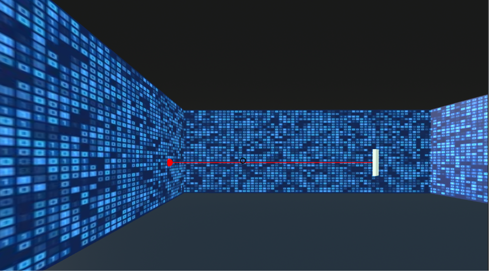
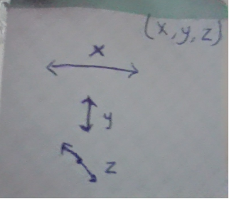

Initial Position Player Spawns To
My first exposure to WebVR, this project is a 3D laser mirror puzzle game built using A-Frame, and a little bit of JS.
The player spawns into a room with a laser emitter, a target, and several mirrors. The player can rotate the mirrors to reflect the laser beam and hit the target.
Overall, this project was a great learning experience for me, and I learned a lot about 3D web development, A-Frame, and the ECS architecture (yes there's something other than OOP)!
I'd been wanting to explore 3D web development for a while. Of course, one of the first things I stumbled across was Three.js, and C#. But I wanted to find something not-so-common, and voila, I found A-Frame!
This project was my first foray into the world of 3D development, and I was excited to see what I could cook up!
I started by reading the official A-Frame documentation.
One of the first things I found was that instead of using OOP, A-Frame uses an Entity-Component-System (ECS) architecture, which is a different way of thinking about programming.
In A-frame, each entitiy-component par is represented by
< a-entity component1="component1-name" component2="component2-name" >
There are several built-in entities and components both from the A-Frame library and from the community, which you can use to create your own 3D scenes. But what I really found intersting was that aside from the basic built in components, you could also create your own custom components using JS, using AFRAME.registerComponent(). For example, to register a new log component, you could do the following:
AFRAME.registerComponent('log', {
schema: {type: 'string'},
init: function () {
var stringToLog = this.data;
console.log(stringToLog);
}
});
See here for more info.
OOOKAYYYY Enough Intro.
After a little brainstorming, I decided to build a Laser Mirror Room, because I wanted to explore the physics system in 3D development.
I found some very good resources to help me get started:
After the basics, it was mostly just about adding entities and playing around with the components to get the desired shape and position, through a lot of trial and error. It took a while to get used to because everything has a 3rd dimension to it: the z-axis.

Had this by my side the whole time
Then I added JS to some of the objects for interactivity (eg pressing on a mirror rotates it). I created
a few new entities too, like 'player' for the user, and 'room-boundary' to restrict the user's environment to only the laser room.
I also found quite a few helpful libraries, like the
A-Frame 360 Image Gallery Boilerplate, and the A-frame environment component
(unfortunately I couldn't use any in this project as it was pretty unique for A-frame ig 😎, so I had to custom make my own scenes).
Then came the crashing realization: The library I was hoping to explore - Don McCurdy’s aframe-physics-system -
only handles collision detection, gravity, and rigid body dynamics. So like it's great for most dynamics required in action video games and e.t.c,
but it doesn't have a light-mirror reflection element (exactly what I needed 🙁).
A-Frame only outlines what exists, and JS determines how it behaves.
ECS is use in game development because unlike 2D apps which have fixed behaviour, 3D apps have a lot of moving parts, and ECS allows for more flexibility and scalability. For me this was new, and took some time to wrap my hear around.
I also found it really cool exploring how A-frame was built on Javscript, see here for more info.
I'd learned about building languages based on others in CSC111, but this was the first time I saw it in action.
------